소방설비기사(전기분야) (2015-05-31 기출문제)
1과목: 소방원론
1. 분진폭발을 일으키는 물질이 아닌 것은?
- 시멘트 분말
- 마그네슘 분말
- 석탄 분말
- 알루미늄 분말
(정답률: 83%)

2. 화재강도(Fire intensity)와 관계가 없는 것은?
- 가연물의 비표면적
- 발화원의 온도
- 화재실의 구조
- 가연물의 발열량
(정답률: 67%)
3. 화재 시 분말 소화약제와 병용하여 사용할 수 있는 포 소화약제는?
- 수성막포 소화약제
- 단백포 소화약제
- 알콜형포 소화약제
- 합성계면활성제포 소화약제
(정답률: 63%)
4. 표준상태에서 메탄가스의 밀도는 몇 g/L인가?
- 0.21
- 0.41
- 0.71
- 0.91
(정답률: 58%)
5. 플래시 오버(Flash over)현상에 대한 설명으로 틀린 것은?
- 산소의 농도와 무관하다.
- 화재공간의 개구율과 관계가 있다.
- 화재공간내의 가연물의 양과 관계가 있다.
- 화재실내의 가연물의 종류와 관계가 있다.
(정답률: 84%)
6. 유류탱크 화재 시 기름 표면에 물을 살수하면 기름이 탱크 밖으로 비산하여 화재가 확대되는 현상은?
- 스롭 오버(Slop over)
- 보일 오버(Boil over)
- 프로스 오버(Froth over)
- 블레비(BLEVE)
(정답률: 68%)
7. 이산화탄소 소화약제의 주된 소화효과는?
- 제거소화
- 억제소화
- 질식소화
- 냉각소화
(정답률: 84%)
8. 버너의 불꽃을 제거한 때부터 불꽃을 올리며 연소하는 상태가 끝날 때까지의 시간은?
- 10초 이내
- 20초 이내
- 30초 이내
- 40초 이내
(정답률: 67%)
9. 위험물안전관리법령상 가연성 고체는 제 몇 류 위험물인가?
- 제1류
- 제2류
- 제3류
- 제4류
(정답률: 81%)
10. 전기에너지에 의하여 발생되는 열원이 아닌 것은?
- 저항가열
- 마찰 스파크
- 유도가열
- 유전가열
(정답률: 80%)
11. 가연물이 공기 중에서 산화되어 산화열의 축적으로 발화되는 현상은?
- 분해연소
- 자기연소
- 자연발화
- 폭굉
(정답률: 78%)
12. 화재 시 이산화탄소를 방출하여 산소농도를 13vol%로 낮추어 소화하기 위한 공기 중의 이산화탄소의 농도는 약 몇 vol%인가?
- 9.5
- 25.8
- 38.1
- 61.5
(정답률: 83%)
13. 저팽창포의 고팽창포에 모두 사용할 수 있는 포 소화약제는?
- 단백포 소화약제
- 수성막포 소화약제
- 불화단백포 소화약제
- 합성계면활성제포 소화약제
(정답률: 75%)
14. 방화구조의 기준으로 틀린 것은?
- 심벽에 흙으로 맞벽치기한 것
- 철망모르타르로서 그 바름 두께가 2cm 이상인 것
- 시멘트모르타르 위에 타일을 붙인 것으로서 그 두께의 합계가 1.5cm 이상인 것
- 석고판 위에 시멘트모르타르 또는 회반죽을 바른 것으로서 그 두께의 합계가 2.5cm 이상인 것
(정답률: 78%)
15. 이산화탄소 소화설비의 적용대상이 아닌 것은?
- 가솔린
- 전기설비
- 인화성 고체 위험물
- 니트로셀로로오스
(정답률: 72%)
16. 목조건축물에서 발생하는 옥내출화 시기를 나타낸 것으로 옳지 않은 것은?
- 천장 속, 벽속 등에서 발염 착화할 때
- 창, 출입구 등에 발염 착화할 때
- 가옥의 구조에는 천장면에 발염 착화할 때
- 불연 벽체나 불연 천장인 경우 실내의 그 뒷면에 발염 착화할 때
(정답률: 73%)
17. 소화약제로서 물에 관한 설명으로 틀린 것은?
- 수소결합을 하므로 증발잠열이 작다.
- 가스계 소화약제에 비해 사용 후 오염이 크다.
- 무상으로 주수하면 중질유 화재에도 사용할 수 있다.
- 타 소화약제에 비해 비열이 크기 때문에 냉각효과가 우수하다.
(정답률: 80%)
18. 건축물의 방재계획 중에서 공간적 대응 계획에 해당되지 않는 것은?
- 도피성 대응
- 대항성 대응
- 회피성 대응
- 소방시설방재 대응
(정답률: 76%)
19. 제6류 위험물의 공통성질이 아닌 것은?
- 산화성 액체이다.
- 모두 유기화합물이다.
- 불연성 물질이다.
- 대부분 비중이 1보다 크다.
(정답률: 65%)
20. 분말 소화약제의 열분해 반응식 중 옳은 것은?
- 2KHCO3 -> KCO3 + 2CO2 + H2O
- 2NaHCO3 -> NaCO3 + 2CO2 + H2O
- NH4H2PO4 -> HPO3 + NH3 + H2O
- 2KHCO3 -> (NH2)2CO + K2CO3 + NH2 + CO2
(정답률: 71%)
2과목: 소방전기회로
21. 개루프 제어계를 동작시키는 기준으로 직접제어계에 가해지는 신호는?
- 기준입력신호
- 피드백신호
- 제어편차신호
- 동작신호
(정답률: 54%)
22. 반파 정류 정현파의 최대값이 1일 때, 실효값과 평균값은?
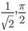
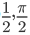
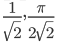
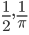
(정답률: 64%)
23. 한 코일의 전류가 매초 150A 의 비율로 변화할 때 다른 코일에 10V 기전력이 발생하였다면 두 코일 상호 인덕턴스(H)는?
- 1/3
- 1/5
- 1/10
- 1/15
(정답률: 71%)
24. 반도체의 특징을 설명 한 것 중 틀린 것은?
- 진성 반도체의 경우 온도가 올라 갈수록 양(+)의 온도 계수를 나타낸다.
- 열전현상, 광전현상, 홀효과 등이 심하다.
- 반도체와 금속의 접촉면 또는 P형, N형 반도체외 접합면에서 정류작용을 한다.
- 전류와 전압의 관계는 비직선형이다.
(정답률: 63%)
25. 서보 기구에 있어서의 제어량은?
- 유량
- 위치
- 주파수
- 전압
(정답률: 73%)
26. 온도, 유량, 압력 등의 공업프로세스 상태량을 제어량으로 하는 제어계로서 외란의 억제를 주된 목적으로 하는 제어방식은?
- 서보기구
- 자동제어
- 정치제어
- 프로세스제어
(정답률: 77%)
27. Y-△ 기동방식인 3상 농형 유도전동기는 직입기동방식에 비해 기동전류는 어떻게 되는가?
- 1/√3 로 줄어든다.
- 1/3 로 줄어든다.
- √3 배로 증가한다.
- 3 배로 증가한다.
(정답률: 71%)
28. 주파수 60Hz, 인덕턴스 50mH인 코일의 유도리액턴스는 몇 Ω 인가?
- 14.14
- 18.85
- 22.12
- 26.86
(정답률: 74%)
29. 주로 정전압 회로용으로 사용되는 소자는?
- 터널다이오드
- 포토다이오드
- 제너다이오드
- 매트릭스다이오드
(정답률: 85%)
30. 논리식 (AㆍA)' 를 간략화한 것은?
- A'
- A
- 0
- ø
(정답률: 64%)
31. 실리콘 정류기(SCR)의 애노드 전류가 5A 일 때 게이트 전류를 2배로 증가시키면 애노드 전류[A]는?
- 2.5
- 5
- 10
- 20
(정답률: 77%)
32. 3상 유도전동기의 회전차 철손이 작은 이유는?
- 효율, 역률이 나쁘다.
- 성층 철심을 사용한다.
- 주파수가 낮다.
- 2차가 권선형이다.
(정답률: 45%)
33. 그림과 같은 게이트의 명칭은?
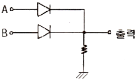
- AND
- OR
- NOR
- NAND
(정답률: 78%)
34. 피드백제어계의 일반적인 특성으로 옳은 것은?
- 계의 정확성이 떨어진다.
- 계의 특성변화에 대한 입력 대 출력비의 감도가 감소된다.
- 비선형과 왜형에 대한 효과가 증대된다.
- 대역폭이 감소된다.
(정답률: 55%)
35. 선간전압이 일정한 경우 △ 결선된 부하를 Y결선으로 바꾸면 소비전력은 어떻게 되는가?
- 1/3
- 1/9
- 3 배로 증가한다.
- 9 배로 증가한다.
(정답률: 66%)
36. 저항이 있는 도체에 전류를 흘리면 열이 발생되는 법칙은?
- 옴의 법칙
- 플레밍의 법칙
- 줄의 법칙
- 키르히호프의 법칙
(정답률: 76%)
37. 반도체를 사용한 화재감지기 중 서미스터(Thermistor)는 무엇을 측정, 제어하기 위한 반도체 소자인가?
- 온도
- 연기 농도
- 가스 농도
- 불꽃의 스펙트럼 강도
(정답률: 88%)
38. A, B 두 개의 코일에 동일 주파수, 동일 전압을 가하면 두 코일의 전류는 같고, 코일 A는 역률이 0.96, 코일 B는 역률이 0.80인 경우 코일 A에 대한 코일 B의 저항비는 얼마인가?
- 0.833
- 1.544
- 3.211
- 7.621
(정답률: 67%)
39. 2 Ω 의 저항 5개를 직렬로 연결하면 병렬연결 때의 몇 배가 되는가?
- 2
- 5
- 10
- 25
(정답률: 68%)
40. 단상전력을 간접적으로 측정하기 위해 3전압계법을 사용하는 경우 단상교류전력 P[W]는?
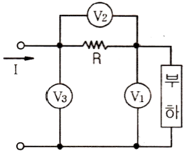
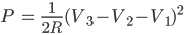
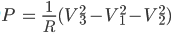
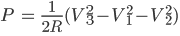
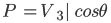
(정답률: 77%)
3과목: 소방관계법규
41. 소방자동차의 출동을 방해한 자는 5년 이하의 징역 또는 얼마 이하의 벌금에 처하는가?(2018년 03월 27일 개정된 규정 적용됨)
- 1천5백만원
- 2천만원
- 3천만원
- 5천만원
(정답률: 66%)
42. 제4류 위험물로서 제1석유류인 수용성 액체의 지정수량은 몇 리터인가?
- 100
- 200
- 300
- 400
(정답률: 56%)
43. 고형알코올 그 밖에 1기압 상태에서 인화점이 40 ℃ 미만인 고체에 해당하는 것은?
- 가연성고체
- 산화성고체
- 인화성고체
- 자연발화성물질
(정답률: 73%)
44. 소방대상물이 아닌 것은?
- 산림
- 항해중인 선박
- 건축물
- 차량
(정답률: 85%)
45. 비상경보설비를 설치하여야 할 특정소방대상물이 아닌 것은?
- 지하가 중 터널로서 길이가 1000m 이상인 것
- 사람이 거주하고 있는 연면적 400m2 이상인 건축물
- 지하층의 바닥면적이 100m2 이상으로 공연장인 건축물
- 35명의 근로자가 작업하는 옥내작업장
(정답률: 78%)
46. 시·도지사가 소방시설업의 등록취소처분이나 영업정지처분을 하고자 할 경우 실시하여야 하는 것은?
- 청문을 실시하여야 한다.
- 징계위원회의 개최를 요구하여야 한다.
- 직권으로 취소 처분을 결정하여야 한다.
- 소방기술심의위원회의 개최를 요구하여야 한다.
(정답률: 80%)
47. 다음은 소방기본법의 목적을 기술한 것이다. (가), (나), (다)에 들어갈 내용으로 알맞은 것은?
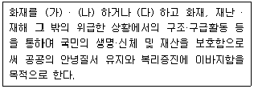
- (가) 예방, (나) 경계, (다) 복구
- (가) 경보, (나) 소화, (다) 복구
- (가) 예방, (나) 경계, (다) 진압
- (가) 경계, (나) 통제, (다) 진압
(정답률: 83%)
48. 위험물 제조소 등에 자동화재탐지설비를 설치하여야 할 대상은?
- 옥내에서 지정수량 50배의 위험물을 저장·취급하고 있는 일반취급소
- 하루에 지정수량 50배의 위험물을 제조하고 있는 제조소
- 지정수량의 100배의 위험물을 저장·취급하고 있는 옥내저장소
- 연면적 100m2 이상의 제조소
(정답률: 53%)
49. 소방시설 중 화재를 진압하거나 인명구조활동을 위하여 사용하는 설비로 나열된 것은?
- 상수도소화용설비, 연결송수관설비
- 연결살수설비, 제연설비
- 연소방지설비, 피난설비
- 무선통신보조설비, 통합감시시설
(정답률: 64%)
50. 다음 중 스프링클러설비를 의무적으로 설치하여야 하는 기준으로 틀린 것은?
- 숙박시설로 11층 이상인 것
- 지하가로 연면적이 1000 m2 이상인 것
- 판매시설로 수용인원이 300인 이상인 것
- 복합건축물로 연면적 5000 m2 이상인 것
(정답률: 57%)
51. "무창층"이라 함은 지상층 중 개구부 면적의 합계가 해당 층의 바닥면적의 얼마 이하가 되는 층을 말하는가?
- 1/3
- 1/10
- 1/30
- 1/300
(정답률: 69%)
52. 다음 중 특수가연물에 해당되지 않는 것은?
- 나무껍질 500kg
- 가연성고체류 2000kg
- 목재가공품 15 m3
- 가연성액체류 3 m3
(정답률: 46%)
53. 소화활동을 위한 소방용수시설 및 지리조사의 실시 횟수는?
- 주 1회 이상
- 주 2회 이상
- 월 1회 이상
- 분기별 1회 이상
(정답률: 82%)
54. 인접하고 있는 시 · 도간 소방업무의 상호응원협정 사항이 아닌 것은?
- 화재조사 활동
- 응원출동의 요청방법
- 소방교육 및 응원출동훈련
- 응원출동대상지역 및 규모
(정답률: 62%)
55. 제1류 위험물 산화성고체에 해당하는 것은?
- 질산염류
- 특수인화물
- 과염소산
- 유기과산화물
(정답률: 74%)
56. 소방대상물에 대한 개수 명령권자는?
- 소방본부장 또는 소방서장
- 한국소방안전협회장
- 시 · 도지사
- 국무총리
(정답률: 71%)
57. 다음 중 소방용품에 해당되지 않는 것은?
- 방염도료
- 소방호스
- 공기호흡기
- 휴대용비상조명등
(정답률: 66%)
58. 다음 소방시설 중 하자보수보증기간이 다른 것은?
- 옥내소화전설비
- 비상방송설비
- 자동화재탐지설비
- 상수도소화용수설비
(정답률: 72%)
59. 소방시설업자가 특정소방대상물의 관계인에 대한 통보 의무사항이 아닌 것은?
- 지위를 승계한 때
- 등록취소 또는 영업정지 처분을 받은 때
- 휴업 또는 폐업한 때
- 주소지가 변경된 때
(정답률: 74%)
60. 특정소방대상물 중 노유자시설에 해당되지 않는 것은?
- 요양병원
- 아동복지시설
- 장애인직업재활시설
- 노인의료복지시설
(정답률: 60%)
4과목: 소방전기시설의 구조 및 원리
61. "고압이라 함은 직류는 (가) V를, 교류는 (나) V를 초과하고 (다) kV 이하인 것을 말한다. "의 문장에서 괄호안에 들어갈 내용으로 옳은 것은?(관련 규정 개정전 문제로 여기서는 기존 정답인 1번을 누르면 정답 처리됩니다. 자세한 내용은 해설을 참고하세요.)
- (가) 750 (나) 600 (다) 7
- (가) 600 (나) 750 (다) 7
- (가) 600 (나) 700 (다) 10
- (가) 700 (나) 600 (다) 10
(정답률: 85%)
62. 유도표지의 설치기준 중 틀린 것은?
- 계단에 설치하는 것을 제외하고는 각 층마다 복도 및 통로의 각 부분으로부터 하나의 유도표지까지의 보행거리가 15m 이하가 되는 곳에 설치한다.
- 피난구유도표지는 출입구 상단에 설치한다.
- 통로유도표지는 바닥으로부터 높이 1.5m 이하의 위치에 설치한다.
- 주위에는 이와 유사한 등화 · 광고물 · 게시물 등을 설치하지 않는다.
(정답률: 61%)
63. 정온식 스포트형 감지기의 구조 및 작동원리에 대한 형식이 아닌 것은?
- 가용절연물을 이용한 방식
- 줄열을 이용한 방식
- 바이메탈의 반전을 이용한 방식
- 금속의 팽창계수차를 이용한 방식
(정답률: 52%)
64. 일반전기사업자로부터 특별고압 또는 고압으로 수전하는 비상전원수전설비의 형식 중 틀린 것은?
- 큐비클(Cubicle)형
- 옥내개방형
- 옥외개방형
- 방화구획형
(정답률: 49%)
65. 피난통로가 되는 계단이나 경사로에 설치하는 통로유도등으로 바닥면 및 디딤 바닥면을 비추어 주는 유도등은?
- 계단통로유도등
- 피난통로유도등
- 복도통로유도등
- 바닥통로유도등
(정답률: 64%)
66. 비상방송설비의 음향장치 설치기준으로 옳은 것은?
- 음량조정기의 배선은 2선식으로 할 것
- 5층 건물 중 2층에서 화재발생시 1층, 2층, 3층에서 경보를 발할 수 있을 것
- 기동장치에 의한 화재신고 수신 후 피난에 유효한 방송이 자동으로 개시될 때까지의 소요시간은 10초 이하로 할 것
- 음향장치는 자동화재탐지설비의 작동과 별도로 작동하는 방식의 성능으로 할 것
(정답률: 77%)
67. 휴대용 비상조명등의 적합한 기준이 아닌 것은?
- 설치높이는 바닥으로부터 0.8 m 이상 1.5m 이하의 높이에 설치할 것
- 사용 시 자동으로 점등되는 구조일 것
- 외함은 난연성능이 있을 것
- 충전식 밧데리의 용량은 10분 이상 유효하게 사용할 수 있는 것으로 할 것
(정답률: 78%)
68. 비상콘센트설비에 자가발전설비를 비상전원으로 설치할 때의 기준으로 틀린 것은?
- 상용전원으로부터 전력의 공급이 중단된 때에는 자동으로 비상전원으로부터 전력을 공급받도록 할 것
- 비상콘센트설비를 유효하게 10분 이상 작동실킬 수 있는 용량으로 할 것
- 점검이 편리하고 화재 및 침수 등의 재해로인한 피해를 받을 우려가 없는 곳에 설치할 것
- 비상전원을 실내에 설치하는 때에는 그 실내에 비상조명등을 설치할 것
(정답률: 81%)
69. 축광유도표지의 표지면의 휘도는 주위조도 01x에서 몇 분간 발광 후 몇 mcd/m2 이상이어야 하는가?
- 30분, 20mcd/m2
- 30분, 7mcd/m2
- 60분, 20mcd/m2
- 60분, 7mcd/m2
(정답률: 61%)
70. 연기감지기를 설치하지 않아도 되는 장소는?
- 계단 및 경사로
- 엘리베이터 승강로
- 파이프 피트 및 덕트
- 20m 인 복도
(정답률: 69%)
71. 감지기 설치기준 중 틀린 것은?
- 감지기는 천장 또는 반자의 옥내에 면하는 부분에 설치할 것
- 차동식분포형의 것을 제외하고 감지기는 실내로의 공기유입구로부터 1.5m 이상 떨어진 위치에 설치할 것
- 정온식감지기는 주방 · 보일러실 등으로서 다량의 화기를 취급하는 장소에 설치하되, 공칭작동온도가 주위온도보다 10℃ 이상 높은 것으로 설치할 것
- 스포트형감지기는 45˚ 이상 경사되지 아니하도록 부착할 것
(정답률: 76%)
72. 비상방송설비에 사용되는 확성기는 각층마다 설치하되 그 층의 각 부분으로부터 하나의 확성기까지의 수평거리는 최대 몇 m 이하인가?
- 15
- 20
- 25
- 30
(정답률: 77%)
73. 비상콘센트보호함의 설치기준으로 틀린 것은?
- 보호함 상부에 적색의 표시등을 설치하여야 한다.
- 보호함에는 쉽게 개폐할 수 있는 문을 설치하여야 한다.
- 보호함 표면에 "비상콘센트" 라고 표시한 표지를 하여야 한다.
- 비상콘센트의 보호함을 옥내소화전함 등과 접속하여 설치하는 경우에는 옥내소화전함의 표시등과 분리하여야 한다.
(정답률: 71%)
74. 자동화재속보설비 설치기준으로 틀린 것은?
- 화재 시 자동으로 소방관서에 연락되는 설비여야 한다.
- 자동화재탐지설비와 연동되어야 한다.
- 스위치는 바닥으로터 0.8m 이상 1.5m 이하의 높이에 설치한다.
- 관계인이 24시간 상주하고 있는 경우에는 설치하지 않을 수 있다.
(정답률: 73%)
75. 수신기를 나타내는 소방시설 도시기호로 옳은 것은?
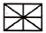
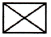
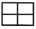
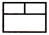
(정답률: 81%)
76. 다음 ( ) 에 들어갈 내용으로 옳은 것은?
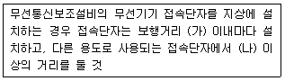
- (가) 400 m (나) 5 m
- (가) 300 m (나) 5 m
- (가) 400 m (나) 3 m
- (가) 300 m (나) 3 m
(정답률: 81%)
77. 누전경보기의 화재안전기준에서 변류기의 설치위치 기준으로 옳은 것은?
- 제1종 접지선측의 점검이 쉬운 위치에 설치
- 옥외 인입선의 제1지점의 부하측에 설치
- 인입구에 근접한 옥외에 설치
- 제3종 접지선측의 점검이 쉬운 위치에 설치
(정답률: 72%)
78. 감도조정장치를 갖는 누전경보기에 있어서 감도조정장치의 조정범위는 최대치가 몇 A 이어야 하는가?
- 0.2
- 1.0
- 1.5
- 2.0
(정답률: 75%)
79. 다음 ( )에 들어갈 내용으로 옳은 것은?
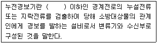
- 사용전압 220V
- 사용전압 380V
- 사용전압 600V
- 사용전압 750V
(정답률: 65%)
80. 부착높이 20m 이상에 설치되는 광전식 중 아날로그방식의 감지기 공칭감지농도 하한값의 기준은?
- 감광율 5%/m 미만
- 감광율 10%/m 미만
- 감광율 15%/m 미만
- 감광율 20%/m 미만
(정답률: 64%)